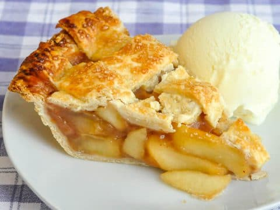
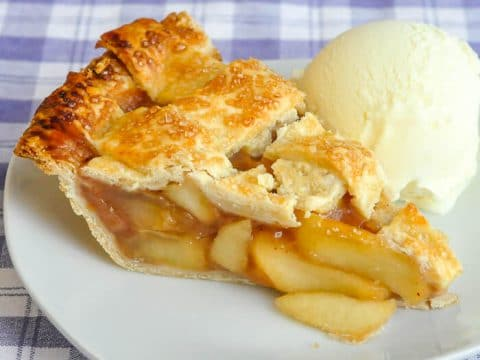
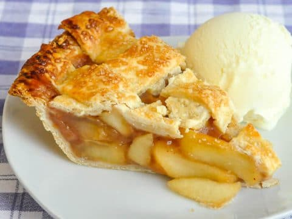

intro
About
Favorite Food
Brands
Recipies
Chefs
Favorite Recipies Page

This is the food pizza and the recipe for pizza would be... INGREDIENTS
Dough:
2/3rd cup hot water
1 tsp active dry yeast
1 tsp sugar
1/2 tsp salt
1/2 tsp vanilla extract
2 tbsp extra virgin olive oil
2 cups all purpose flour
Sauce: 1 can tomato sauce
2 tbsp extra virgin olive oil
1/2 tbsp basil
1/2 tbsp oregano
1 tsp sugar
1/4 tsp salt
1/4 tsp red pepper flakes
1/2 tbsp minced garlic
PREPARATION In large bowl, combine hot water, yeast, and sugar. Stir with a fork and let sit 4 minutes until foamy. Add salt, vanilla, olive oil, and flour. Stir as well as you can with a wooden spoon, then transfer to a large, flour dusted working surface. Knead the dough by hand, adding a dusting of flour if too sticky. (A good trick is to fold in half left to right, then right to left, then top to bottom, then repeat) Roll out the dough with a roller to fit your pizza pan. Personally, I roll it out a little larger, then using the pizza pan as a guide, I cut the excess off and then roll it to form a higher edge. For the sauce, combine all ingredients, mix with a fork, and pour on the dough! Add 1 lb shredded mozzarella cheese and toppings of choice and cook at 475 for 13 to 20 minutes.
 
